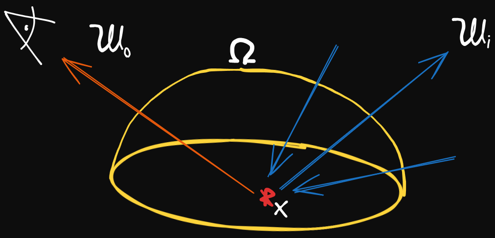
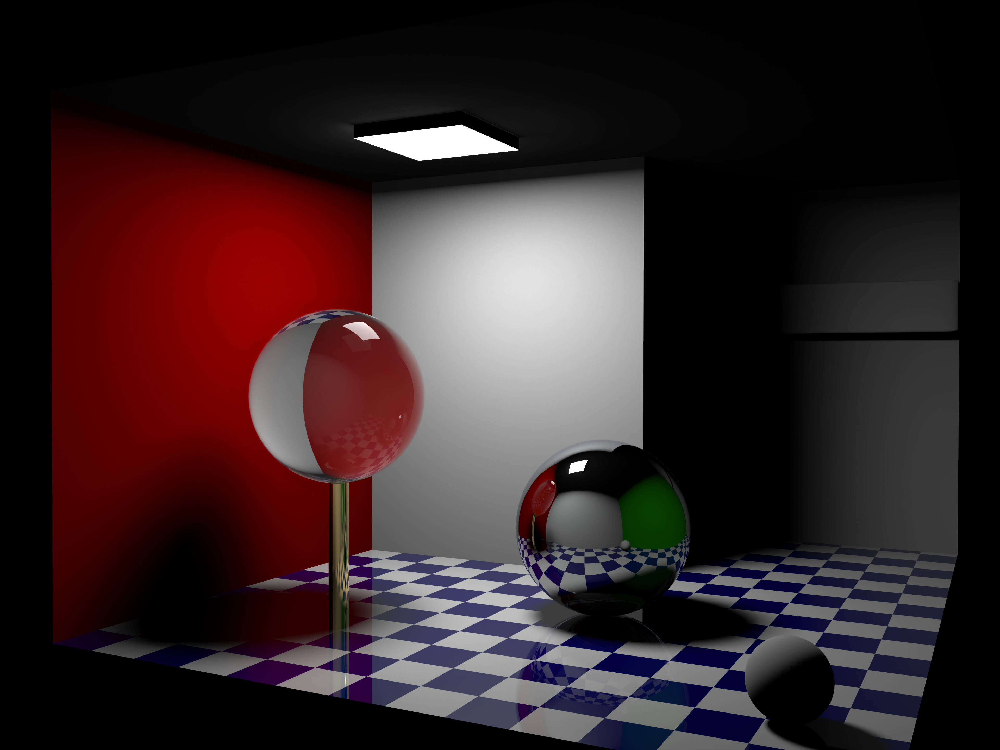
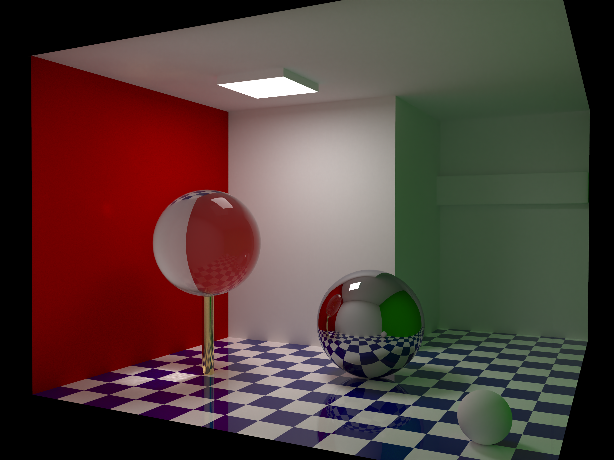
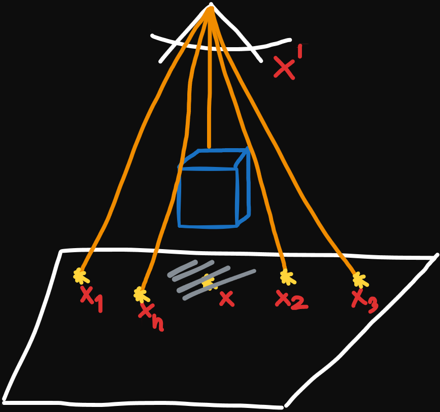
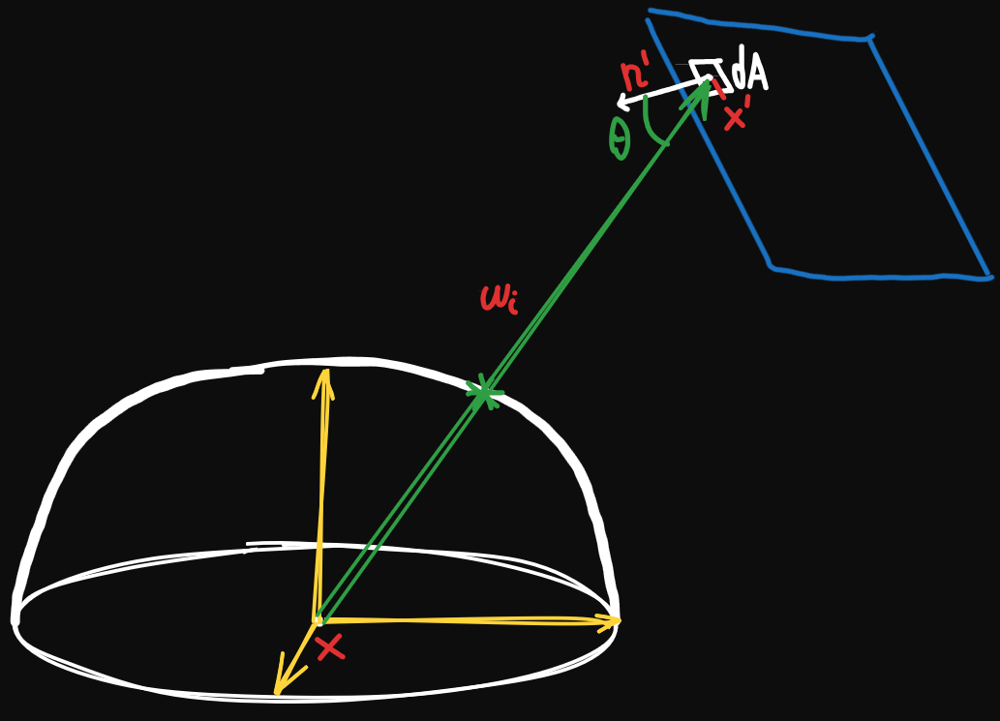

Global Illumination Guide
Contents
Introduction
Global Illumination (GI) is a term for a family of light rendering algorithms that account for light arriving at a surface from anywhere in the scene.
Global Illumination combines 2 kinds of illumination, direct illumination and indirect illumination. In Direct Illumination, light travels from a light source to a surface. In Indirect Illumination light is bounced off 1 or more surfaces first before reaching the surface in question.
In Physically Based Rendering (PBR), light transport is described using the Rendering Equation (1986) which expresses the amount of light leaving a point on a surface as the sum of emitted light and reflected light. Every GI algorithm is in a way an attempt to approximate its solution
\[ L_o(x, \omega_o) = L_e(x, \omega_o) + \int_{\Omega} f_r(x, \omega_i, \omega_o) L_i(x, \omega_i) (\omega_i \cdot n) d\omega_i \]

Where:
- \(x\) : A point on a surface.
- \(\Omega\) : Unit hemisphere centered at normal \(n\) over point \(x\).
- \(\omega_o\) : Outgoing direction of light.
- \(\omega_i\) : Incoming direction of light.
- \(n\) : The surface normal vector at point \(x\).
- \(L_o(x, \omega_o)\) : Total radiance leaving point \(x\) along direction \(\omega_o\).
- \(L_e(x, \omega_o)\) : Radiance emitted by the surface itself at \(x\) along direction \(\omega_o\).
- \(f_r(x, \omega_i, \omega_o)\) : Surface Bidirectional Reflectance Distribution Function (BRDF), describing the light arriving from direction \(\omega_i\) that is reflected toward \(\omega_o\).
- \(L_i(x, \omega_i)\) : Incoming Radiance arriving at point \(x\) from direction \(\omega_i\).
- \((\omega_i \cdot n)\) : Cosine term (\(\cos \theta\)) between the incoming light direction and the surface normal.
- \(d\omega_i\) : Differential angle around direction \(\omega_i\).
Looking at the equation, \(L_o\) depends on \(L_i\) but light arriving at point \(x\) from direction \(\omega_i\) must have been emitted or reflected by some other point \(x'\) in the scene:
\[ L_i(x, \omega_i) = L_o(x', -\omega_i) \]
To compute a color of a single pixel you must know the color of every surface illumination it, which depends on every surface illuminating them. Because of this the equation is recursive and has no closed form solution.

By Barahag - Own work, CC BY-SA 4.0, Link

By Barahag - Own work, CC BY-SA 4.0, Link
Direct Illumination
Direct illumination computes light that travels in an unobstructed straight line from an emitter (eg. light source) directly to a surface and reflects toward the observer. This represents a single bounce of light transport.
Instead of integrating incoming light over the entire hemisphere \(\Omega\), DI only needs to evaluate the light arriving from known emitters. To achieve this we can use a binary visibility function \(V(x, x')\) which will tell us if the path between surface point \(x\) and a point on the light source \(x'\) is blocked by something:
\[ V(x, x') = \begin{cases} 1 & \text{if } x \text{ and } x' \text{ are unobstructed} \\ 0 & \text{ if an occluder blocks them} \end{cases} \]
You would ideally evaluate this using a shadow map or by testing a shadow ray, you can either get hard or soft shadows. Hard shadows are caused when a light has 0 surface area and visibility is binary while soft shadows are caused when a light lights up a finite space \(A_l\) and an occluder may only block some of the light, this gives you 2 different shadow regions
\[ V_{\text{soft}}(x) = \frac{1}{|A|} \int_{A} V(x, x') dA \]
- Umbra (V = 0): Region where light source is completely occluded.
- Penumbra (0 < V < 1): Region where light source is partially occluded.

If visibility is obstructed we receive no direct illumination and this is how shadows are formed (image above). Instead of integrating over the full hemisphere \(\Omega\) we can only compute light that comes from emitter surfaces \(A_l\) by changing from differential angle \(d\omega_i\) to differential surface area on lights \(dA\)
\[ d\omega_i = \frac{n' \cdot (-\omega_i)}{\|x' - x\|^2} dA \]
If we substitute this into the rendering equation we will get the area formula of direct illumination:
\[ L_o(x, \omega_o) = L_e(x, \omega_o) + \int_{A_l} f_r(x, \omega_i, \omega_o) L_e(x', -\omega_i) V(x, x') \frac{(n \cdot \omega_i)(n' \cdot -\omega_i)}{\|x' - x\|^2} dA \]

Where:
- \(A_l\) : Total surface area of all light emitters in the scene.
- \(x'\) : A point on the surface of an emitter.
- \(n'\) : The surface normal vector at point \(x'\) on the light source.
- \(\|x' - x\|^2\) : Squared Euclidean distance between surface point \(x\) and emitter point \(x'\).
- \(L_e(x', -\omega_i)\) : Radiance emitted by the light source at \(x'\) in the direction of surface point \(x\).
- \(V(x, x')\) : Binary visibility function.
- \((n \cdot \omega_i)\) : Cosine of the angle between incoming light and the surface normal at \(x\).
- \((n' \cdot -\omega_i)\) : Cosine of the angle between the emitter normal and the direction toward \(x\).
- \(dA\) : Differential surface area element on the light source.
Most games use ideal analytical lights such as point, spot and directional lights instead of geometric meshes. Because these light sources act as a dirac delta distribution we can simplify the integral further into a sum over all active lights
\[ L_o(x, \omega_o) = L_e(x, \omega_o) + \sum_{k=1}^{N} f_r(x, l_k, \omega_o) C_k V(x, x_k) \max(0, n \cdot l_k) f_a(d_k) \]
Where:
- \(N\) : Total number of analytical light sources affecting the surface.
- \(k\) : Index of the current light source.
- \(l_k\) : Normalized unit direction vector pointing from surface point \(x\) toward light \(k\).
- \(C_k\) : Color and radiant intensity of light source \(k\).
- \(x_k\) : Position of light source \(k\) in world space.
- \(V(x, x_k)\) : Visibility factor for light \(k\).
- \(\max(0, n \cdot l_k)\) : Clamped cosine term so surfaces facing away from the light receive 0 illumination.
- \(d_k\) : Distance from surface point \(x\) to light position \(x_k\) (\(\|x_k - x\|\)).
- \(f_a(d_k)\) : Distance attenuation function.
the terms \(l_k\), \(d_k\), & \(f_a(d_k)\) change depending on the light type, common ones are:
- Directional Light: Is a light source infinitely far away and the rays are parallel so the direction \(l_k\) is constant across the entire scene and there is no position \(x_k\) and there is no distance attenuation (\(f_a(d_k) = 1\)).
- Point Light: Emits light omnidirectionally from a position \(x_k\). The light vector is \(l_k = \frac{x_k - x}{\|x_k - x\|}\), and attenuation follows the inverse square law \(f_a(d_k) = \frac{1}{d_k^2}\).
- Spotlight: A point light constrained to a cone direction (cone light) It multiplies the inverse square distance attenuation by a falloff term: \[ f_a(d_k) = \frac{1}{d_k^2} \cdot \text{clamp}\left(\frac{\cos \theta - \cos \theta_{\text{outer}}}{\cos \theta_{\text{inner}} - \cos \theta_{\text{outer}}}, 0, 1\right) \] where \(\cos \theta = -l_k \cdot s_k\), \(s_k\) is the normalized cone vector of the light & \(-l_k\) is the unit vector pointing from the light toward the surface point \(x - x_k\)
Limitations of Direct Illumination are very easy to notice in indoor scenes or scenes with complex light transport. DI cannot account for light that bounces off other surfaces so it misses indirect illumination, color bleeding and ambient (indirect) shadows and leaving areas with no light pitch black.